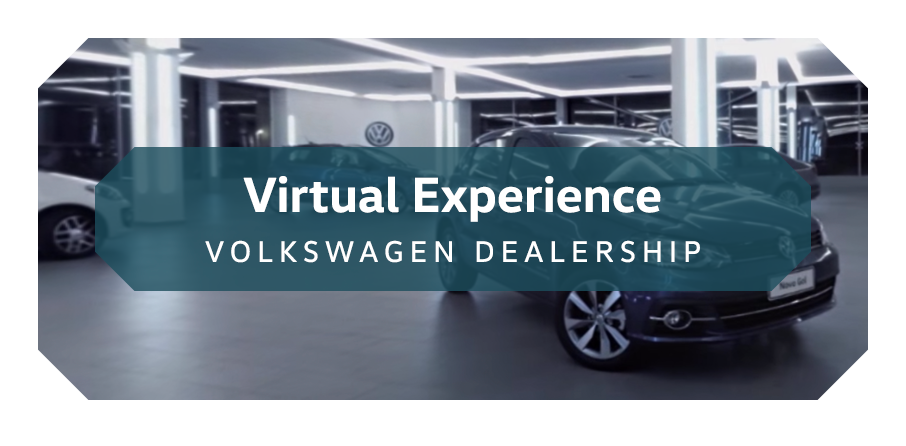

<link rel="import" href="../../bower_components/polymer/polymer.html">
<link rel="import" href="el-close.html">

<dom-module id="page-press">
    <template>
        <style>
            :host {
                display: block;
                text-align: center;
                font-size: 1.2em;
                background-image: url(../../assets/old-images/home/bgsAreas/bg0.jpg);
                background-position: center top;
                background-repeat: repeat-x;
                padding: 2rem;
            }
            .page-press__container {
                width: 60rem;
                max-width: 100%;
                padding: 2rem;
                margin: 0 auto;
            }
            .page-press__container > section {
                margin-bottom: 8rem;
            }
            .page-press__logo {
                text-align: center;
                padding: 0 4rem;
                margin-bottom: 4rem;
            }
            .page-press__logo img {
                width: 100%;
                max-width: 25rem;
            }
            .page-press__headline {
                text-transform: uppercase;
                font-weight: bolder;
            }
            .page-press__instructions {
                color: #2c5c81;
            }
            .page-press__section-header {
                margin-bottom: 4rem;
                padding-bottom: 1rem;
                color: #e86623;
                font-size: 1.1em;
                border-bottom: 2px solid currentColor;
                text-transform: uppercase;
                text-align: left;
            }
            .page-press__yt-link {
                position: relative;
            }
            .page-press__yt-link::after {
                position: absolute;
                width: 4.96%;
                height: 10.08%;
                content: " ";
                display: block;
                /* background-color: red; */
                top: calc(100% - 31px);
                left: calc(100% - 20px);
                background-image: url(../../imprensa/assets/+.png);
                background-repeat: no-repeat;
                background-size: 100% 100%;
                background-position: center center;
            }


        </style>

        <div class="page-press__container">
            <el-close></el-close>

            <h1 class="page-press__logo">
                
            </h1>

            <section class="page-press__teaser">
                <p class="page-press__headline">
                    Here you can find all of Volkswagen’s virtual experiences
                </p>

                <p class="page-press__instructions">
                    Upon clicking on the experience, you will be redirected to the YouTube App. From the video, click on the 360 degree glasses or select the option to enter virtual reality mode (the cell phone screen will show images/videos reflected side by side.
                </p>

                <p class="page-press__yt-link">
                    <a href="https://youtu.be/Di9z6pFqpaY" target="_new">
                        
                    </a>
                </p>

                <p>
                    Volkswagen presents, direct from the showroom floor, four immersive virtual experiences with equipment of the highest technology and surprising image quality.<br>
                    <a href="#/">Learn more.</a>
                </p>
            </section>

            <section class="page-press__more">
                <h2 class="page-press__section-header">More experiences</h2>

                <p class="page-press__yt-link">
                    <a href="https://www.youtube.com/watch?v=OhmvTVYpZMk" target="_new">
                        
                    </a>
                </p>

                <p class="page-press__yt-link">
                    <a href="https://www.youtube.com/watch?v=rv1klcdTQ7Y" target="_new">
                        
                    </a>
                </p>
            </section>
        </div>
    </template>

    <script>
    Polymer({
        is: 'page-press',
        properties: {},
    });
    </script>
</dom-module>
